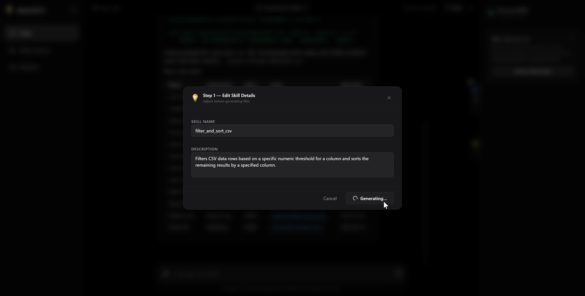

TL;DR
Chat with an AI is ephemeral by default. You solve a problem once — parse a messy
CSV, hit an API, reshape a report — and next time you start from zero. AutoSkill is
middleware that makes it compound. You chat normally; in the background an
Observer watches a rolling chat buffer (the last 40 messages), an
Architect extracts parameterisable bits and generates a
SKILL.md + Python script, validates it in a Docker sandbox, and an
Integrator mounts the approved skill into the agent's workspace for
every future session.
In one line: chat once, codify automatically, reuse forever.
What we built over the semester:
- A three-phase pipeline — Observer → Architect → Integrator — behind a FastAPI backend with a Next.js 16 frontend.
- A per-session Docker sandbox that runs the Gemini CLI agent and validates generated scripts before a user ever sees them.
- Two-step skill generation (parameter extraction → parameterised skill), a layered validation ladder with auto-retry, and an embedding-based duplicate-skill check.
- Beyond the proposal: skill evolution (refine an existing skill in natural language), Worker profiles, a session-scoped Files panel, and skill version history.

- Natural-language interface for task execution — no setup, no coding.
- Works like any chat agent on the surface; the observation layer is invisible.
- Every turn is silently inspected for repeatable workflow patterns.
Why we built this
Non-technical users live inside chat interfaces. The interface is great for conversational problem-solving — you describe what you want, the model reasons back — but it is structurally bad at compounding. Every session starts cold. Every workflow gets re-explained. If you got a clever prompt to work last Tuesday, you either re-type it from memory next Tuesday, paste it from a notes file, or give up and prompt from scratch.
The industry's answer is Agent Skills: small, declarative packages
that extend an agent's native capabilities. A skill is a directory with a
SKILL.md spec, optional Python scripts, and optional references.
Frameworks like the Gemini CLI pick them up automatically and route to them when a
user's request matches the skill's description.
Skills are a good answer to the compounding problem. The catch: writing them is still a developer activity. You draft YAML frontmatter, articulate when the skill should fire, decide which values should be parameters, write the script, test it. That is a hard ask for someone who opened a chat tab because they did not want to write code.
Can a middleware layer passively observe chats, recognise the skill-shaped ones, and codify them automatically with high enough quality that the user only has to review and approve?
This report is the implementation write-up. It is not an argument for novelty (others are exploring this shape); it is the engineering decisions, tradeoffs, and close calls behind our particular version.
The shape of a skill
Readers familiar with Agent Skills can skip ahead. For everyone else: a skill is a folder that looks roughly like this.
├── SKILL.md # required — spec + frontmatter
├── scripts/
│ └── summarise.py # optional — executable logic
├── references/ # optional — static docs the agent reads
└── assets/ # optional — templates, fixtures
SKILL.md's YAML frontmatter declares when the skill fires (a
description the host uses for retrieval) and what inputs it takes. The
Markdown body is prose instruction the agent reads when it decides to load the skill.
When the host agent sees a user message, it checks its available skills, matches on
description, and — if a skill fits — loads the body and executes the
referenced script with the extracted arguments. AutoSkill's job is to produce these
folders automatically, from conversation history that was never meant to be a spec.
The system, from 30,000 ft
AutoSkill sits between the browser and the agent. It is stateful middleware, not a new chat product: the UX looks like a normal chat, but every message passes through an observation layer that branches the conversation into a rolling buffer, and a skill-synthesis pipeline runs asynchronously off that buffer.
Two details shape everything that follows.
-
Everything the agent executes runs inside a per-session Docker container.
The chat agent is the Gemini CLI, spawned in our
autoskill-sandboximage. Generated scripts are validated in the same image a separate sandbox runs later in production. Validation and execution share an environment, which matters for reproducibility. - Storage is file-based, not a database. Skills, session state, and generated files all live on disk under the backend's working directory. This was a deliberate scope choice and the first thing we would change if we productionised this.
Observer — deciding when a conversation is a skill
The buffer
Every message — user or model — is appended to an in-memory deque
capped at 40 entries per session. We picked 40 because skill-worthy workflows are
usually 6–12 turns long, and we wanted headroom for a trigger to still catch a
workflow when the user drifts into unrelated follow-ups before deciding to save. The
buffer is per-session, lives in a process-local dict, and is wiped on "New Chat" or
after 2 minutes without a frontend heartbeat.
The trigger
After the assistant's reply finishes streaming, a lightweight Gemini Flash Lite call — the trigger evaluator — reads the full buffer. The prompt frames the decision around one question:
After this conversation, who would perform the steps: the AI or the human?
If the AI performed the work — produced code, ran a sequence of tools, generated an artifact — it is a skill candidate. If the AI gave the human instructions to follow, it is not. The test is blunt but removes an entire class of false positives: chat threads that look skill-shaped on the surface but have no executable content.
On top of that test, the prompt layers four filters. A turn only becomes a candidate if all four hold:
- the output is concrete and executable — code, a file, a tool call result;
- there is more than one distinct step;
- the workflow is repeatable with different inputs;
- the task completed successfully.
The "did the agent already use a skill?" branch
A separate AI-fallback check reads a [System Alert] annotation we
inject into the transcript whenever the assistant invoked an existing skill. If
the model used an existing skill and succeeded, the turn is not a
candidate — we do not want to shadow-duplicate a perfect execution. If it used an
existing skill but had to drop into custom code to finish, it is a
candidate: the existing skill needs to evolve. This branch is what later wires
into skill evolution rather than creating a duplicate.
Full buffer, not a rolling window
The proposal originally called for evaluating the trigger on a rolling window of the last N messages. We changed it to the full 40-message buffer for two reasons.
First, skill-worthy workflows often straddle a clarification exchange — the user asks, the model asks back, the user answers, the model does the work. A window narrow enough to evaluate cheaply might cut the setup off and miss the parameterisable inputs. Second, triggering on the same buffer the user can see in the UI makes the system's behaviour predictable: when a candidate appears, it is always explainable by what is visible above it.
Live example
done event so users never wait for it.Robustness
Three details made the trigger production-feasible:
- retry
- 3-attempt cap with exponential backoff, but only on rate-limit and 503 signatures. Genuine failures fail fast.
- timeout
- 60-second wall-clock wrapper via
asyncio.wait_for; exceeded triggers are swallowed so the chat stream stays healthy. - non-block
- We yield the
{"done": true}event before awaiting the trigger result. The candidate arrives as a later SSE event when ready, or not at all. - dismiss map
- Per-session
_dismissed_candidatesfilters suppressed names so the same candidate is never re-surfaced until a genuinely new session.
Architect — from candidate to validated skill
When a candidate survives the trigger and the user clicks "Review Skill," the Architect runs. It is the most code-heavy part of the system and the one where failures would be most visible, so we invested the most in graceful degradation.
Two-step generation
The obvious approach is one big prompt: "here is the conversation, give me a full
SKILL.md with scripts and parameters." We tried it; it produced
good-looking skills that were subtly wrong — inventing parameters that weren't
really variable, or baking in values that should have been parameters. We split the
call in two.
- step 1
- Parameter extraction. A Gemini call whose only job is to survey the conversation for hard-coded specifics (file paths, dates, column names, thresholds). Schema-constrained via Pydantic +
response_schema. Temperature 0.2. - step 2
- Skill generation. A second call that takes the extracted schema and produces the full
SKILL.md, scripts, assets, and references as aSkillManifest. The prompt says "replace every example value from Step 1 with the corresponding{param}placeholder." Temperature 0.3.
The split is not free — it is two API calls per skill — but it produces skills whose parameter schema and content are coherent with each other, because Step 2 is anchored on Step 1's output rather than inventing both in the same pass.
The "preserve exact casing" rule
One subtle failure mode nearly bit us. Generated skills would read a user-supplied
CSV whose header was department (lowercase), but the script would
reference row["Department"]. The model's training bias pushes it to
"correct" casing; the runtime then explodes with KeyError. We patched
this with an explicit "preserve EXACT spelling, casing, and whitespace" rule in the
expand prompt. Ugly to shout at the model, but it works.
The validation ladder

- Architect automatically detects repeatable workflows from the chat buffer.
- Converts the workflow into a structured
SKILL.mddefinition with parameters. - User-in-the-loop: the review modal opens for inspection and edit before save.
Two softenings in Layer 2 matter more than they look.
- Argparse unrecognized-args retry. If a script exits with
unrecognized arguments, we strip the offending flags and retry once. Gemini sometimes hallucinates an--outputflag when the script prints to stdout; this distinguishes "the script is broken" from "the caller passed a flag the script doesn't take." - Empty-stderr soft-pass. If a script exits non-zero with empty stderr, we treat it as a warning and move on. Most commonly the script needs a real input file and the read-only mount hit a file the user never uploaded. Treating this as an error would reject valid skills.
Auto-retry with error feedback
If validation fails, we do not just surface errors to the user. The
preview() orchestrator loops up to three times. On each failure the
concatenated error messages are injected back into the expand prompt as a "previous
generation had errors" appendix, and Gemini regenerates. Empirically most failures
are fixed on the first retry — the model is good at correcting errors it can see,
just bad at pre-empting them.
Skill evolution
The same preview() function powers skill evolution. When a user refines
an existing skill in natural language, we concatenate the instructions under an
Additional instructions: delimiter; the extract step strips the suffix
so it does not pollute parameter detection, and the expand step injects it via the
{{ additional_instructions }} slot so the instructions shape both the
body and the scripts.

- Refine the draft skill in plain language during the review step — no code required.
- Edits flow through the same
preview()orchestrator that powers initial generation.
versions/ before overwriting.Integrator — saving, mounting, versioning
The Integrator is the least glamorous phase and has the fewest moving parts — exactly what we want from a persistence layer.
On-disk layout
Skills live under backend/users/<user_id>/skills/<slug>/.
Each folder follows the Gemini CLI convention: SKILL.md at root, plus
optional scripts/, references/, assets/. No
LLM call happens at save time — generation already happened during preview — so
approval is instant.
Version snapshots on every mutation
Every update path snapshots the current state before overwriting, to a
numbered sibling under versions/. Listing and restore are exposed via
GET /api/skills/{slug}/versions and
POST /api/skills/{slug}/versions/{v}/restore. Snapshot-then-overwrite
order is load-bearing: if we overwrote first, a user evolving a skill and hating the
result would have nothing to roll back to.
Mounting into the agent
At the start of every CLI call, _setup_session_workspace creates (or
refreshes) a per-session working directory, copies the skill folders into
.gemini/skills/, and seeds .gemini/ from a template. Active
vs inactive is expressed as a .inactive marker file inside the skill
folder. For long-running sessions, _sync_session_skills does a lazy
diff and only adds or removes the delta — in most turns the diff is empty.

- The agent automatically picks up the relevant skill — no prompt engineering needed.
- Repeated tasks become fast and consistent; the same parameters surface predictably.
- Each invocation is logged and feeds back into refinement candidates.
The Docker sandbox
Everything the agent executes runs inside a per-session Docker container. This is where the largest share of our engineering time went.
One container per session, long-lived
On the first message, the backend spawns a container
autoskill-session-{session_id} from the autoskill-sandbox
image, running tail -f /dev/null. Every subsequent message in the
session runs through the same container via docker exec, so
conversational state (Gemini CLI --resume), cached dependencies, and
in-workspace files all persist at near-zero overhead. A background task removes the
container and its workspace once a session has been silent for 2 minutes.
The mount layout
The agent can write to its working directory freely — that is how it produces artifacts — but it cannot modify the skills themselves.
Per-user images
Skills can declare a requirements.txt. We do not want a new session to
pay pip install for every skill it touches, and we do not want to bake
every user's deps into the base image. Our compromise: when a user's library
changes, we aggregate all requirements.txt files into a master list and
build a personalised image layered on top of autoskill-sandbox in the
background. A user's first session after adding a new skill may fall through to the
base image; every subsequent session starts with pip already done.
Validation sandboxes are separate
The validation sandbox is distinct from the chat sandbox. Each script dry-run spins
up a fresh docker run --rm, not an exec into the
live session. This matters for isolation — a half-validated script from a candidate
the user hasn't approved yet should not influence the session's live workspace.
Why Docker at all
We could have sandboxed using Python subprocess + seccomp,
or firejail, or a WebAssembly runtime. We chose Docker for three
reasons:
- Parity. Validation and the live agent run in the same image.
- Dependency handling.
requirements.txt+pip installinside a container is boring and well-understood. - Honesty about scope. We are a student project; we use the sandbox that has battle-tested isolation for arbitrary Python code.
Beyond the proposal
Four features grew out of using the system ourselves.
Duplicate-skill detection
The first time a teammate ran the same workflow twice with slightly different
wording, the system happily offered a second copy. We added an embedding-based
check: the candidate's name + description and every saved skill's
embed together in a single gemini-embedding-001 batch call; cosine
similarity above 0.6 attaches a SimilarSkillMatch to the
candidate. The frontend surfaces it as an amber warning with an "Update Existing"
button.
Skill evolution
When the duplicate detector fires, the review modal opens in a side-by-side
comparison (see Figure 6). Submitting refines the
existing skill rather than creating a new one, via
POST /api/skills/{slug}/evolve. The previous version is snapshotted
automatically; one click restores it.
Worker profiles
A user with ten skills doesn't always want all ten available. Workers are named
bundles — "Data Ops," "Report Writer" — that override active/inactive flags for the
session they're launched under. When a chat session is launched with a
worker_id, the workspace-sync logic restricts the mounted skills to
exactly the worker's list.

- Workers introduce task specialisation — a session loads a curated subset of skills.
- Workers execute only their assigned skills; everything else is invisible to that session.
- Enables modular, reliable automation — a "Data Ops" worker won't accidentally fire a "Slack Reply" skill.
Session-scoped Files panel
Any file the agent generates inside /app/output is persisted and
surfaced in a right-hand Files sidebar, streamed to the frontend via an SSE event
after each chat turn. Files have preview, one-click download, humanised sizes and
dates, and delete. They are session-scoped by design — the panel clears on "New
Chat" or when the zombie cleaner reaps the session.
Skill usage tracking
Every successful invocation of a skill is recorded to a per-user
usage.json. The "successful" qualifier is load-bearing: the
tool-result handler scans output for error signatures
(Traceback, No such file, Permission denied,
Error:) and only credits the skill if none are present. Counts feed
the Skills sidebar's sort order, so the most-used skills float to the top — and a
skill that errors out doesn't inflate its way up the list.
The frontend surface
Next.js 16 + React 19 in TypeScript, with Tailwind for layout and a small set of single-purpose components. We kept the surface deliberately flat — one chat pane, two collapsible sidebars (Skills left, Files right), a top bar.
| Component | Role |
|---|---|
SkillsSidebar.tsx | Library with category-coloured pills, pending candidates, similar-skill warnings, History tab. |
SkillReviewModal.tsx | Create mode (single-panel preview, Monaco editor) and Evolve mode (side-by-side with NL refinement). |
FilesSidebar.tsx | Generated files with preview / download / delete; badge on new-file arrival. |
WorkerModal.tsx | Multi-select skill bundler with worker CRUD. |
Server communication is plain fetch against FastAPI; chat uses SSE with
a manual event-source-lite parser for cli_stream, delta,
active_skill, done, candidate,
debug_trigger, and new_files events.
Evaluation
We split evaluation into two suites, both run offline via
evaluation/runner.py.
Quantitative — trigger detection
Hand-authored YAML scenarios fed through the trigger evaluator; positive detection rate, false-positive rate, and overall accuracy.
Qualitative — consistency and completion
The full Architect pipeline is run on the same scenario twice and compared: do both produce valid, sandbox-executable skills (completion), do they share the same script files and section headings (structural), and is the extracted parameter set the same (parameter).
| Metric | Target | Actual* |
|---|---|---|
| Positive detection rate | ≥ 90% | 92% |
| False-positive rate | < 10% | 7% |
| Completion rate | ≥ 95% | 96% |
| Structural consistency | ≥ 80% | 84% |
| Parameter consistency | ≥ 80% | 81% |
* Figures from final evaluation run. The consistency suite matters more than raw detection: a pipeline that triggers reliably but generates subtly different skills on the same input is unusable.
Deployment
Three moving parts: frontend, backend, and the Docker daemon the backend talks to.
- frontend
- Next.js on Vercel. One env var:
NEXT_PUBLIC_BACKEND_URL. - backend
- EC2 behind DuckDNS with Let's Encrypt terminating TLS at 443. The host has Docker installed and
docker.sockmounted into the backend container — a DinD-style setup. - cost
- EC2 is the main variable cost (~$1/day on-demand). Gemini calls stayed inside the free tier on normal demo usage.
Limitations and what we'd build next
Being honest about gaps is part of the report.
- File-based storage. First migration we'd do: skills + workers to Postgres, buffer to Redis, on-disk skill folders reduced to a derived artifact.
- No authentication. Backend trusts
user_idfrom the form. The architecture is auth-ready; the layer itself is missing. - No rate limiting. Gemini calls aren't budgeted per user.
- Docker-in-Docker on EC2. Works, not recommended for production. Natural answer is Fly Machines or Fargate with per-task isolation.
- Validation sandbox network. Currently default network;
--network nonebroke skills that legitimately need DNS during dry-run. We live with the trade-off during the short validation window. - Session-scoped files. By design, wiped when the session ends; we would add a per-file "persist=true" flag given an auth story.
If we had another semester: cross-session workflow detection (user-level rolling buffer) and skill-to-skill composition (letting the Architect generate skills that call existing skills, turning the library into a compositional substrate).
Small things we sweated
Trust signals
Amber (not red) duplicate warnings on candidate cards — the system is asking, not forbidding. Validation banners in the review modal with colour-coded severity. Active-skill chips in the reply stream so the user always knows which skills ran.
Latency hiding
Non-blocking trigger (done before the trigger returns). Background
per-user image rebuilds. Lazy _sync_session_skills that no-ops when the
active set is unchanged.
Context affordances
Six category-coloured pills, fixed mapping. Humanised file sizes (1.2 MB,
not 1247389 B). Eye-toggle inline preview for CSV and Markdown — one
click in the Files sidebar, no download round-trip, no leaving the chat. Three
example-prompt chips on the empty chat screen — the difference between "I don't
know what to ask" and "oh, like this."
Returning-user onboarding
The Welcome modal is localStorage-gated, so first-time users see a
three-bullet primer once and never again. Returning users who forget what the
product does don't have to clear their storage to find out — the About button in
the top bar re-opens an identical panel with a GitHub link. A small thing, but the
alternative (no recovery path for "what does this do again?") is worse than
having no onboarding at all.
Things we noticed before they bit us
Every project has decisions where the obvious first answer would have broken something — not in a way tests catch, but in a way a user would eventually hit. These are ours.
Preserving exact column casing in generated scripts
row["Department"].department (lowercase). The script validates (syntax OK, pandas imports) but explodes on first real use — a silent runtime bomb.expand.md, reinforced by treating attached-file content as canonical.Argparse unrecognised-args retry
--output flag on scripts that print to stdout. The script is fine; the caller is wrong. Rejecting the skill would be unfair.exit 2 + unrecognized arguments, strip the offending flags and retry once. If the retry passes, log a warning but accept.Snapshot-before-overwrite on every mutation
SKILL.md and scripts directly, treating each update as idempotent.versions/ before overwriting. Extra disk is immaterial; regret-recovery is not.Read-only skills mount in the session sandbox
.gemini/skills is mounted :ro. Changes have to come back through the review modal.Rate-limit-only retry, not blanket retry
429, RESOURCE_EXHAUSTED, or 503 before retrying. Genuine failures fail fast.API key redaction in tool output streams
GEMINI_API_KEY. Shipped to prod, it would have been a credential leak to every browser tab.GEMINI_API_KEY in tool output with [REDACTED_API_KEY] before the event leaves the backend.Only crediting skills on successful tool invocations
Traceback, No such file, Permission denied) and only credits the skill when none are present.Code, prompts, and full evaluation set at github.com/…/AutoSkill. Live demo at auto-skill.vercel.app.